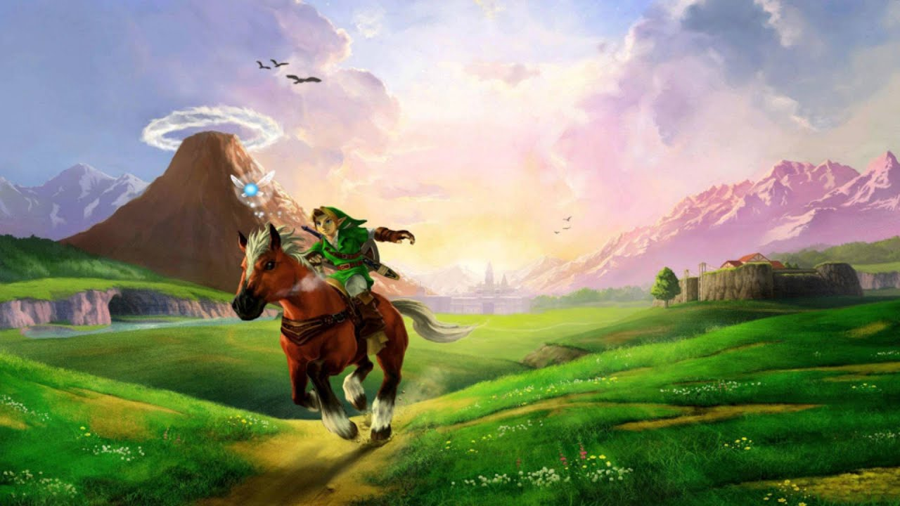

About Link!
Link is the name shared by the main protagonists of The Legend of Zelda series. In most games of The Legend of Zelda series, their adventures take place within Hyrule, traveling through the land, collecting important items, and defeating a wide variety of enemies while trying to save both Princess Zelda and her kingdom from the clutches of Ganon or other villains. The first Link was introduced as a young Sword-wielding boy, but the identity, appearance, and role of each incarnation of Link has varied from game to game. Also, he's famously known for the best game in history: The Legend of Zelda: Ocarina of Time.
Link and the Ocarina of Time!
Characteristics!
- He carries the famous Master Sword!
- He always is with Navy!
- He is the forgotten hero of Hyrule!
Link's Companions through out the games!
Link had had many companions, the most famous one, Navy, in Ocarina of Time. Others being Midna in Twilight Princess, Tatl in Majora's Mask, Epona in many games for being the fastest way to travel in the game. Fi, in Skyward Sword, Ezlo in Minish Cap and King of Red Lions in Wind Waker! Click on the following links to read more about the companions of Link's herohood.